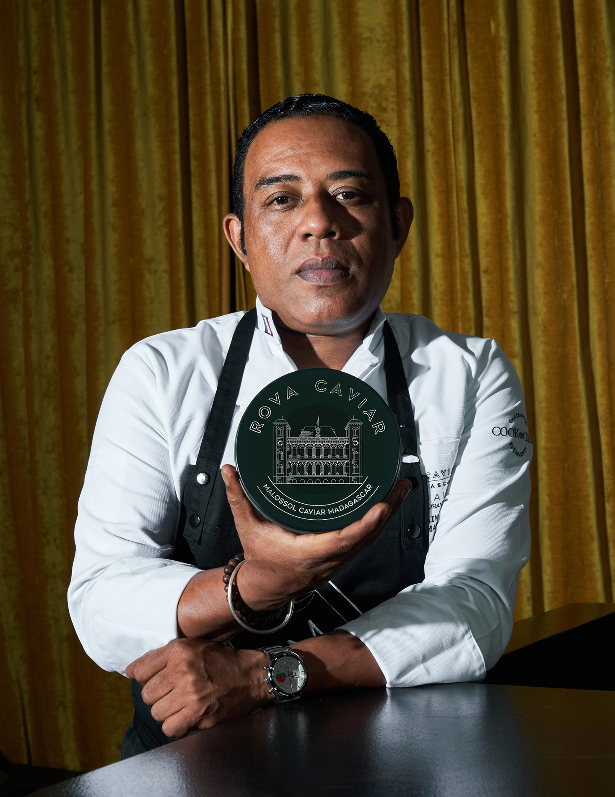
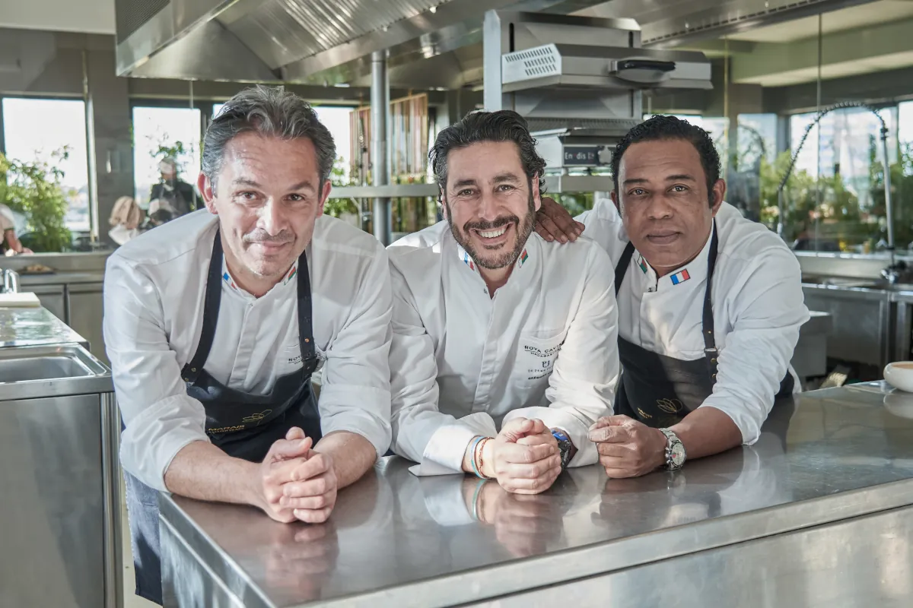
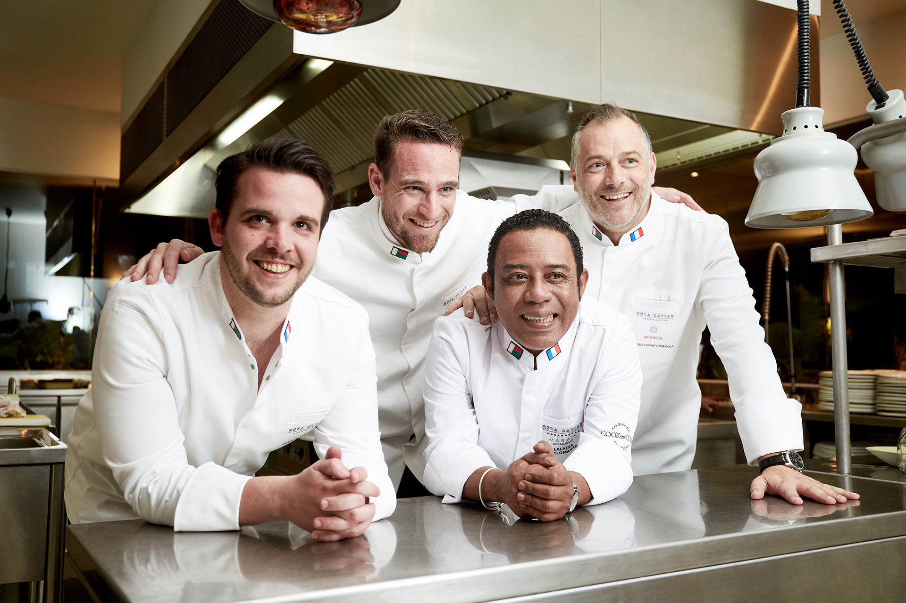

Lalaina Ravelomanana
Chef étoilé | Académie Culinaire de France
L'histoire d'un homme
Lalaina Ravelomanana, un Chef Malgache autodidacte qui n'a peur de rien et désireux de toujours proposer le meilleur. Le Chef le plus réputé de Madagascar, disciple d'Auguste Escoffier ayant d'ores et déjà reçu 9 prix internationaux, honoré en 2010 d'être le Premier Chef Africain intronisé à la prestigieuse Académie Culinaire de France.
Passionné par la cuisine depuis son plus jeune âge, Lalaina a su gravir les échelons avec détermination et talent. Son parcours l'a mené aux quatre coins du monde, où il a pu enrichir son savoir-faire auprès des plus grands chefs.
Distinctions

Sa philosophie
"La cuisine est un art qui se partage. Chaque assiette raconte une histoire, celle des producteurs, des terroirs, et de ceux qui la préparent avec passion. Mon engagement est de sublimer les trésors de Madagascar avec une cuisine sincère, technique et créative."
— Chef Lalaina Ravelomanana
Dans les coulisses


